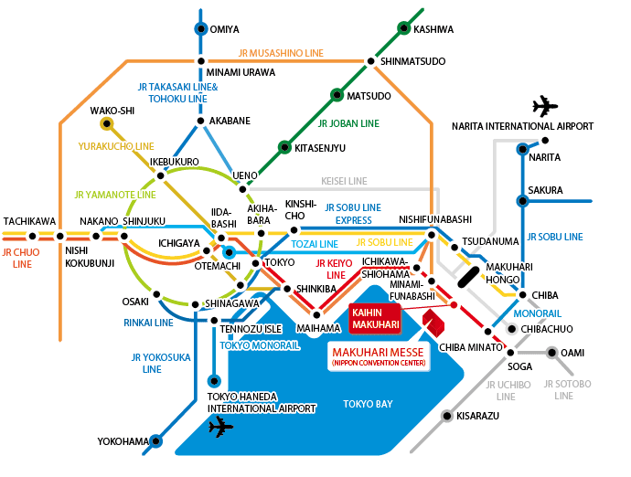

개최장소
마쿠하리메세(치바시 미하마쿠)
http://www.m-messe.co.jp/en/
전철로 오시는 길

| JR 게이요선 | "게인힌마쿠하리"역에서 도보로 5분(도쿄역에서 29분, 소가역에서 12분) |
|---|---|
| JR 소부선 | "마쿠하리혼고"역에서 * "치바머린경기장"행 또는 "의료센터"행(일요일/공휴일 운휴) 버스로 17분, "타운센터"에서 하차하여 도보로 3분. * "마쿠하리메세 추오"행 버스로 17분, "마쿠하리메세 추오"에서 하차 |
고속버스
From/To Narita International Airport
Operated by Keisei Bus| Stopped at: | Narita Airport Terminal 1/ Terminal 2, Hotel Springs Makuhari, JR Kaihin Makuhari Station,Hotel New Otani Makuhari, Hotel Francs, Hotel The Manhattan, Hotel Green Tower Makuhari, APA Hotel & Resort TOKYO Bay Makuhari |
|---|---|
| Fare: | JPY1,100 for One-Way |
From/To Haneda International Airport
Operated by Keisei Bus| Stopped at: | Haneda Airport New International Terminal/ Terminal1/Terminal 2, Hotel New Otani Makuhari, Hotel Francs, Hotel The Manhattan, Hotel Green Tower Makuhari, APA Hotel & Resort, Hotel Spring Makuhari, JR Kaihin Makuhari Station, Makuhari Messe |
|---|---|
| Fare: | JPY1,120 for One-Way |
Operated by Airport Limousine
| Stopped at: | Haneda Airport New International Terminal/ Terminal1/Terminal 2, Hotel Springs Makuhari, JR Kaihin Makuhari Station, Hotel New Otani Makuhari, Hotel Francs, Hotel The Manhattan, Hotel Green Tower Makuhari, APA Hotel & Resort, Makuhari Messe |
|---|---|
| Fare: | JPY1,120 for One-Way |
Note: Fares and schedule are subject to change without notice.
자동차로 오시는 길
* 히가시칸토 자동차도로: 완간나라시노I.C 또는 완간치바I.C.에서 약 5분
* 게이요도로: 마쿠하리I.C.에서 약 5분
※ 마쿠하리메세주차장: 5500대 수용(일반자동차 1,000엔/1일)
※ 주차장에 관한 자세한 사항은 http://www.m-messe.co.jp/access/access_car.html을 참조하십시오.
※ 행사장 교통편에 관한 자세한 사항은 http://www.m-messe.co.jp/access/index.html을 참조하십시오.
숙박
If you are looking for accommodations in Japan, JTB(Japan Travel Bureau)
will help you to find a place to stay. Please access to the following URL to find out best place to stay. JTB offers wide varieties of accommodations from near Makuhari Messe to downtown Tokyo.